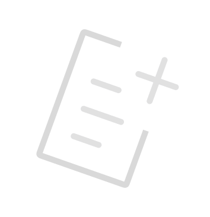

<ion-content [fullscreen]="true">
  <ion-header collapse="condense">
    <ion-toolbar>
      
    </ion-toolbar>
  </ion-header>

  <ion-card class="banner">
    
    <ion-card-header>
      <ion-card-title>
        <h1 style="margin: 0" translate>site.nova-tarefa</h1>
      </ion-card-title>
    </ion-card-header>
  </ion-card>

  <div class="task-contents">
    <form [formGroup]="formularioTarefa" (ngSubmit)="criarTarefa()">
      <ion-card class="card-new-task">
        <h3 translate>Nome:</h3>
        <ion-item lines="none">
          <!-- Vinculando o input ao FormGroup -->
          <ion-input
            placeholder="Nome da tarefa..."
            formControlName="nome_tarefa"
          ></ion-input>
        </ion-item>
      </ion-card>
      <ion-card class="card-new-task">
        <h3 translate>Nova tarefa:</h3>
        <ion-item lines="none">
          <!-- Vinculando o textarea ao FormGroup -->
          <ion-textarea
            placeholder="Tarefas..."
            formControlName="tarefa"
          ></ion-textarea>
        </ion-item>
      </ion-card>
      <ion-card class="card-new-task">
        <h3 translate>Data limite:</h3>
        <ion-item lines="none">
          <!-- Vinculando o ion-datetime ao FormGroup -->
          <ion-datetime
            [formControlName]="'data_limite'"
            [firstDayOfWeek]="1"
            presentation="date"
          ></ion-datetime>
        </ion-item>
      </ion-card>
      <ion-card class="card-new-task">
        <h3 translate>Disciplina:</h3>
        <ion-item lines="none">
          <!-- Vinculando o ion-select ao FormGroup -->
          <ion-select aria-label="" formControlName="disciplina_id">
            <ion-select-option value="ihm">ihm</ion-select-option>
            <ion-select-option value="es2">es2</ion-select-option>
            <ion-select-option value="abd">abd</ion-select-option>
          </ion-select>
        </ion-item>
      </ion-card>
      <ion-card class="card-new-task">
        <h3 translate>Nível de prioridade:</h3>
        <ion-item lines="none">
          <!-- Vinculando o ion-select ao FormGroup -->
          <ion-select aria-label="" formControlName="prioridade">
            <ion-select-option value="baixa">Baixa</ion-select-option>
            <ion-select-option value="media">Media</ion-select-option>
            <ion-select-option value="alta">Alta</ion-select-option>
          </ion-select>
        </ion-item>
      </ion-card>
      <div class="save-btn">
        <ion-button type="button" (click)="cancelar()">Cancelar</ion-button>
        <ion-button type="submit">Criar</ion-button>
      </div>
    </form>
  </div>
</ion-content>
